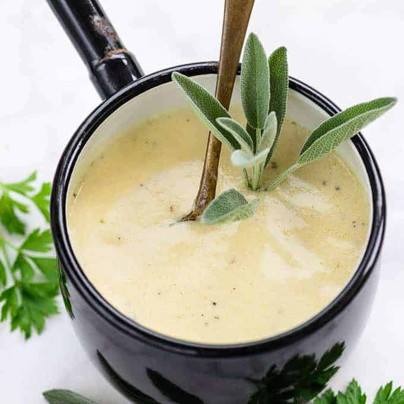

Creamy Garlic Parmesan Sauce

Description
Garlic Parmesan Sauce is a creamy, dense sauce made from garlic, flour, milk, and cheese.
This is a versitile sauce that can be used for chicken wings, pastas and salmons
Ingredients
- 4 tablespoon Butter
- 1 teaspoon Garlic (Minced)
- 2 tablespoon All Purpose Flour
- 1 cup Full Fat Milk
- 1 cup Chicken Broth (Use Veg Broth for Veg Version)
- ½ cup Parmesan Cheese
- 1 teaspoon Garlic Powder
- Salt to taste
- ½ teaspoon Freshly Cracked Black pepper
Steps
- Heat butter in a pan.
- Add garlic and fry for a few seconds.
- Add flour and fry for a minute on low heat.
- Add milk gradually and keep whisking continuously to make a lump free mixture.
- Add chicken broth and cook until the sauce thickens.
- Add parmesan cheese, garlic powder, salt and black pepper and cook until cheese melts.
- Use the sauce as required.